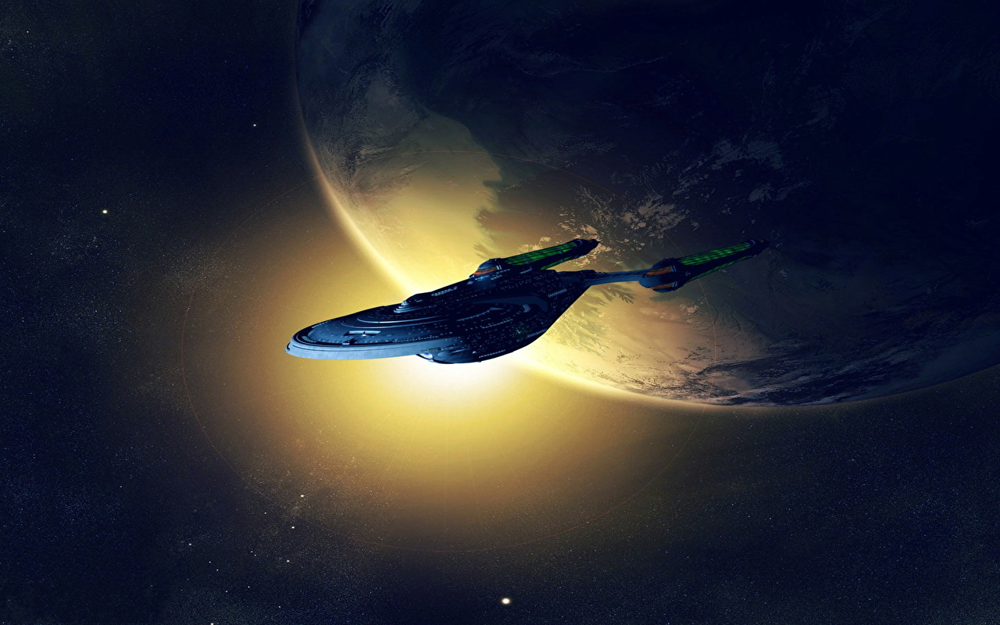

Bienvenido a nuestra pequeña odisea por el espacio infinito de Star Trek. Sumérgete en esta enciclopedia virtual que celebra la fascinante saga de ciencia ficción, creada con entusiasmo como parte de una práctica para la asignatura de Lenguaje de Marcas. Explora el espacio mientras descubres cómo los elementos semánticos de HTML5 dan vida a este rincón dedicado a la exploración y la diversidad interestelar. ¡Disfruta tu viaje por el universo de Star Trek!
¡Bienvenido a la Trekkipedia!
¿Sabías que...
...el saludo vulcaniano del señor Spock fue inventado por el propio Leonard Nimoy? Está inspirado en un gesto de bendición usado por los sacerdotes kohanim durante los servicios.
...que Hanelle M. Culpepper, la directora de los dos primeros episodios de la serie "Star Trek: Picard", es la primera mujer que ha dirigido el estreno de una serie de la franquicia?
...que la serie "Star Trek: Discovery" es la primera de la franquicia que no se ha rodado físicamente en Hollywood, ni siquiera en Estados Unidos, sino que se ha hecho en los Estudios Pinewood de Toronto, Canadá?
...que la mayoría de los vulcanos son vegetarianos?
...que el gimnasio a bordo del USS Enterprise-D tiene zona de aerobic, artes marciales, un espacio de anbo-jytsu y una sala de esgrima?
Vídeo del día
Star Trek la serie original - Tráiler remasterización
Imágen del día
Nave Enterprise-D
